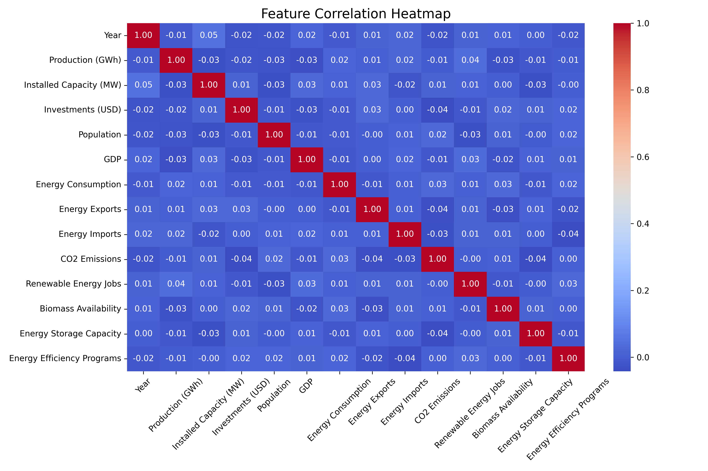
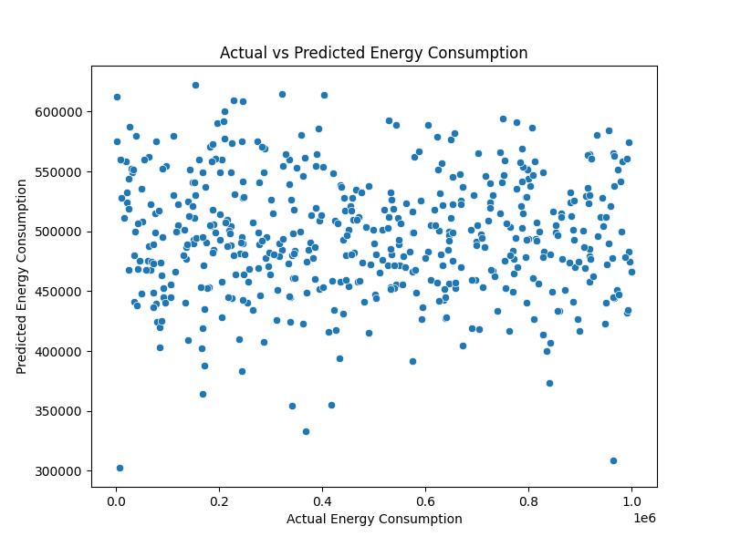
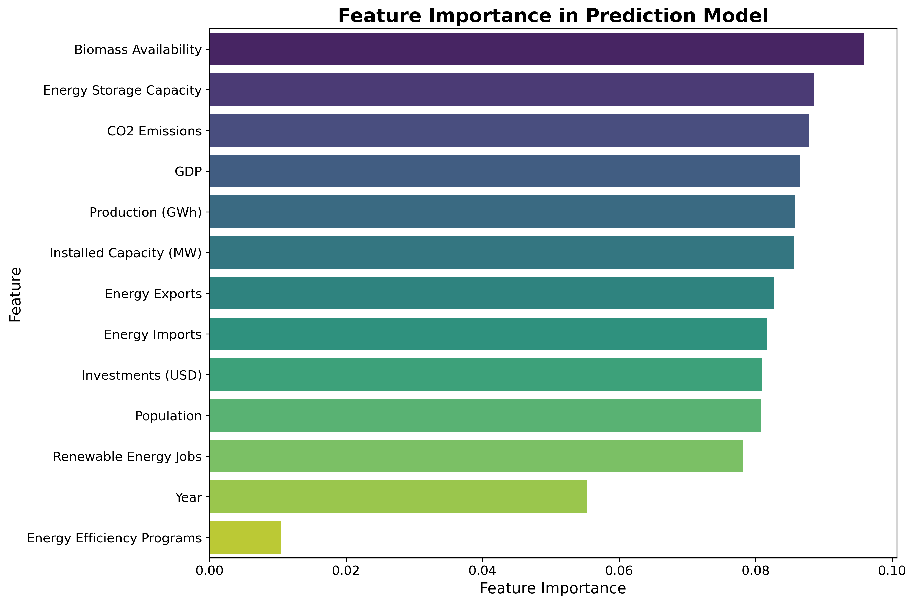

Energy Consumption Distribution
This histogram shows the frequency distribution of energy consumption values in the dataset. The curve provides insights into the overall consumption pattern, helping to detect skewness or anomalies.

This heatmap visualizes the correlation between different features in the dataset. Darker shades indicate stronger positive or negative relationships, helping to identify highly correlated variables that may impact energy consumption.
This scatter plot compares the actual energy consumption values with the model’s predicted values. A strong alignment along the diagonal line suggests accurate predictions, whereas deviations indicate errors.
This bar chart highlights the most influential features in predicting energy consumption. Features with higher importance contribute significantly to the model’s decision-making, guiding optimization efforts.
This histogram shows the frequency distribution of energy consumption values in the dataset. The curve provides insights into the overall consumption pattern, helping to detect skewness or anomalies.